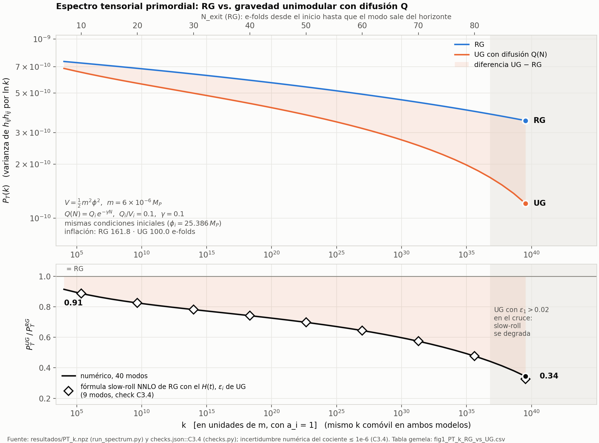
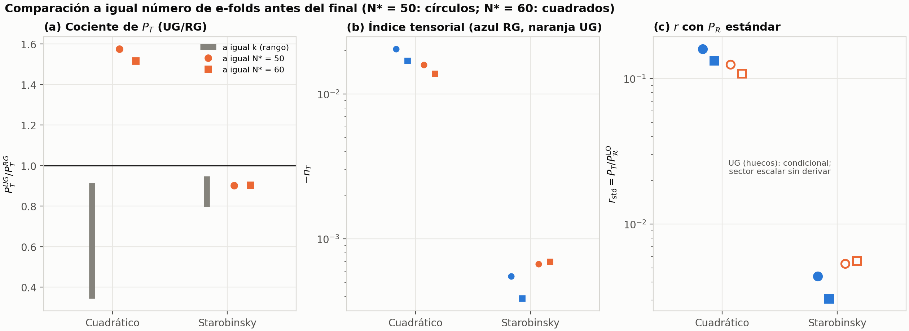
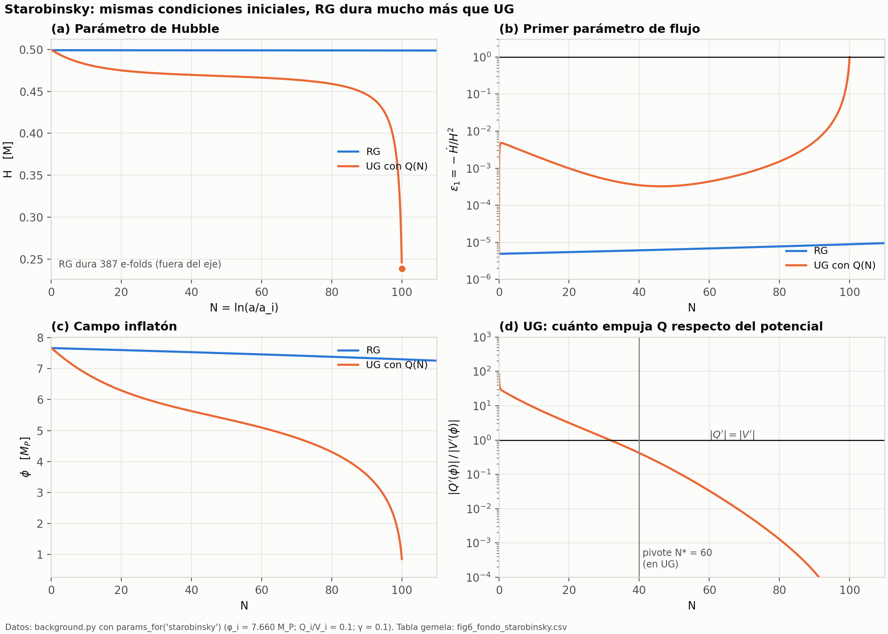
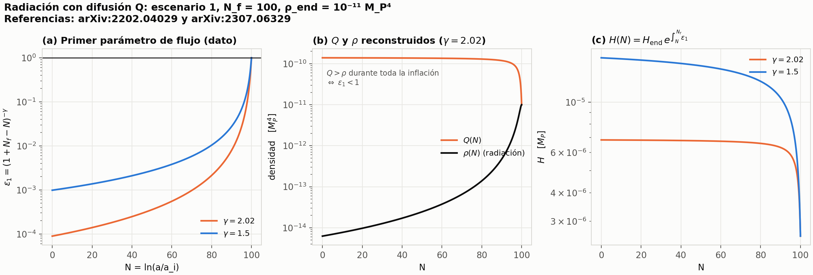
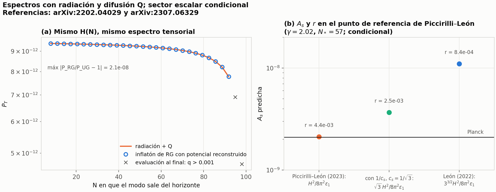

Javier Pineau · Curso GW IA — trabajo final · 28-sep-2026 ·
Paper (PDF) · Informe largo (PDF) · Código, datos y registro de procedencia: en este repositorio (README.md, REPRODUCCION.md)
En gravedad unimodular (UG) el tensor energía-impulso puede no conservarse, ∇ₐTᵃᵇ = ∇ᵇQ, con Q una función escalar (la difusión). ¿Cambia por eso el espectro de potencia tensorial primordial P_T(k) respecto de la relatividad general (RG)?
| # | Resultado | Estatus |
|---|---|---|
| 1 | Sobre FLRW plano la ecuación de los modos TT es la de RG: ḧ + 3Hḣ + k²h/a² = 0; Q y Λ₀ entran solo por H(t). | Derivada a mano; verificada con SymPy a 1.er orden. La acción a 2.º orden: solo a mano, y se adopta como hipótesis de la realización efectiva (la ecuación de propagación no fija la normalización cuántica). Supone materia sin parte TT. |
| 2 | Inflatón + Q(N)=Q_i e^{−γN}, cuadrático: a igual k UG suprime P_T (0.914→0.344 veces RG); a igual N* lo aumenta (×1.5). Starobinsky: aproximadamente 9.6–9.8 % a igual N* y 5.3–20.4 % a igual k: 0.90 a igual N*, entre 0.947 y 0.796 a igual k. | Numérico, 10+8 controles. Q(N) es fenomenológica. Igual N* es una convención ilustrativa (falta el recalentamiento). |
| 3 | Para un escalar canónico con Q como ley local Q(φ), UG se reescribe como RG con V_eff=V+Q(φ)+Λ₀. Si se impone δQ=0 en el marco especificado y la perturbación del inflatón es inhomogénea, resulta Q̇=0. | Simbólico (fondo y 1.er orden); la equivalencia perturbativa, a mano. No cubre perturbaciones uniformes ni otros gauges (δQ depende del gauge); con Q(N) vale solo sobre la rama reconstruida. |
| 4 | Modelo de radiación con difusión Q (arXiv:2202.04029; arXiv:2307.06329) (radiación pura + Q, sin inflatón): P_T = RG con el mismo H(N) (≲10⁻⁶). En el punto de referencia de Piccirilli–León: A_s = 2.12·10⁻⁹ (+1.1 % vs Planck) con su fórmula escalar; ×5.2 con la de arXiv:2202.04029. | Condicional: el sector escalar no está derivado; normalización de la referencia, no reajustada. |
M calibrada. Detalle en el paper y en provenance/PROVENANCE.md.
P_T(k) en RG y UG (cuadrático) a igual k.


ε₁, Q, ρ, H.
P_T con radiación+Q vs inflatón de RG reconstruido; A_s y r según tres fórmulas escalares (condicional).H(t) y del criterio de comparación. El acoplamiento escalar y las fórmulas alternativas de A_s son discusión condicionada.γ=0 = RG (10⁻¹³), integrador independiente (4·10⁻¹⁰).Seguir REPRODUCCION.md en la raíz del repositorio para instalar el entorno y ejecutar el notebook. Con ese entorno activado:
make all PY="$PWD/.venv/bin/python" # resultados → 47 pruebas → PDF → docsLas cifras escritas a mano en esta página y en el paper no se regeneran: provenance/numbers.json es la fuente.
Alcance del validador. validate_provenance.py realiza un chequeo estructural de campos, claves y existencia de archivos/funciones. No ejecuta productores ni certifica la verdad de las afirmaciones o la cobertura del HTML/PDF. Las citas textuales no se verifican. El registro incluye controles, tablas, diagnósticos y datasets completos.
Procedencia: provenance/numbers.json (valores, entradas, referencias y datasets), provenance/claims.yaml (24 afirmaciones, 10 figuras), provenance/PROVENANCE.md.
Referencias del modelo: Inflation and the cosmological (not-so) constant in unimodular gravity (2022); Reconstruction of inflationary scenarios in non-conservative unimodular gravity (2023).